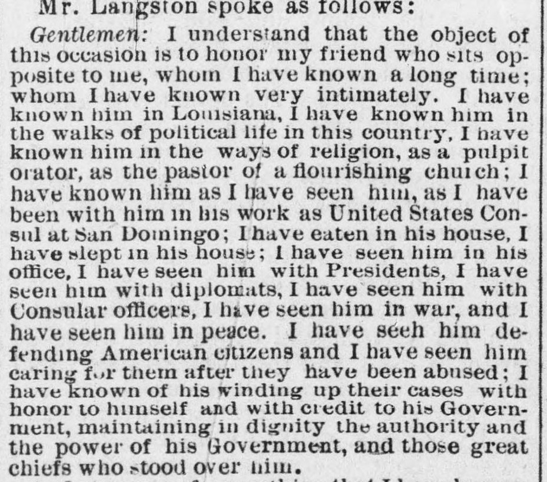

 See the full pageVer la página completa
See the full pageVer la página completa
Astwood) it gave me vet great pleasure to write to theAstwood) me produjo gran placer escribir a la
A speaker at an event, identifying as a fifty-year-old Democrat, publicly praised Mr. Astwood and expressed a desire for him to remain in his position as United States Consul at San Domingo. The speaker also asserted that the colored race can demonstrate the capability to occupy any position held by a white man, and that existing prejudices among white people can be easily overcome.Un orador, que se proclamó demócrata de cincuenta años, encomió públicamente al Sr. Astwood e hizo votos por su confirmación en el cargo de cónsul de los Estados Unidos en Santo Domingo. Proclamó además que la raza negra reúne sobrada capacidad para desempeñar cualquier dignidad detentada por el hombre blanco y que las prevenciones raciales de estos últimos se pueden disipar con facilidad.
FULL TEXT:TRADUCCIÓN:
Mr. Langston spoke as follows:El Sr. Langston habló como sigue:
Gentlemen: I understand that the object of this occasion is to honor my friend who sits opposite to me, whom I have known a long time; whom I have known very intimately. I have known him in Louisiana, I have known him in the walks of political life in this country, I have known him in the ways of religion, as a pulpit orator, as the pastor of a flourishing church; I have known him as I have seen him, as I have been with him in his work as United States Consul at San Domingo; I have eaten in his house, I have slept in his house; I have seen him in his office, I have seen him with Presidents, I have seen him with diplomats, I have seen him with Consular officers, I have seen him in war, and I have seen him in peace. I have seen him defending American citizens and I have seen him caring for them after they have been abused; I have known of his winding up their cases with honor to himself and with credit to his Government, maintaining in dignity the authority and the power of his Government, and those great chiefs who stood over him.Caballeros: Entiendo que el objeto de esta ocasión es honrar a mi amigo que se sienta frente a mí, a quien he conocido desde hace mucho tiempo; a quien he conocido muy íntimamente. Lo he conocido en Luisiana, lo he conocido en los caminos de la vida política en este país, lo he conocido en los caminos de la religión, como orador de púlpito, como pastor de una iglesia floreciente; lo he conocido como lo he visto, como he estado con él en su trabajo como Cónsul de los Estados Unidos en Santo Domingo; he comido en su casa, he dormido en su casa; lo he visto en su oficina, lo he visto con Presidentes, lo he visto con diplomáticos, lo he visto con oficiales Consulares, lo he visto en guerra, y lo he visto en paz. Lo he visto defendiendo ciudadanos estadounidenses y lo he visto cuidándolos después de que han sido abusados; he sabido de él concluyendo sus casos con honor para sí mismo y con crédito para su Gobierno, manteniendo en dignidad la autoridad y el poder de su Gobierno, y de esos grandes jefes que estaban sobre él.
The New York Freeman. New York, May 14, 1887.
See the original at the Library of CongressVer el original en la Biblioteca del Congreso
Published by: T. Thomas Fortune, 1884-1887.Publicado por: T. Thomas Fortune, 1884-1887.
Edition: Edition 1Edición: edición 1
Page: 2Página: 2
Frequency: weekly (1884–1887)Frecuencia: semanal (1884–1887)
Collection: Chronicling America, Library of CongressColección: Chronicling America, de la Biblioteca del Congreso
LCCN: sn83027102LCCN: sn83027102
ISSN: 2996-6388ISSN: 2996-6388
OCLC: 10126322OCLC: 10126322
Rights: public domain, according to the Library of CongressDerechos: dominio público, según la Biblioteca del Congreso